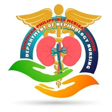

Skip to content

Nephrology Nurses Week
Awards 2026
Awards
Committee
Results
Results
The tally is for the selection committee. Enter the committee PIN.
Committee PIN
Open the tally
Selection committee
Automated tally
Refresh